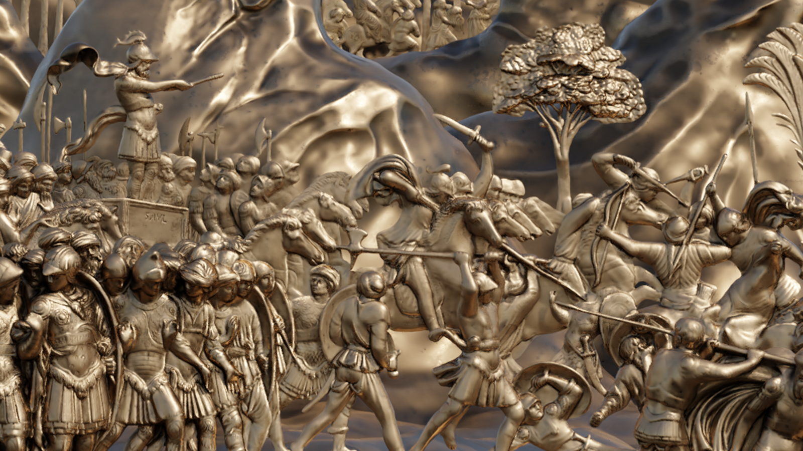
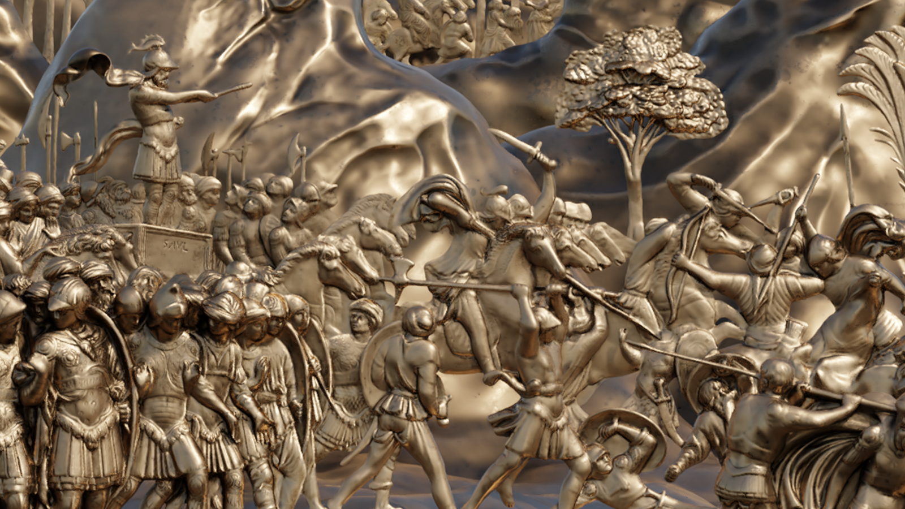

Mycocell

Thesis, 2024
The Mycocell project merges nature and technology into a living, ephemeral, and sustainable
architecture.
By combining mycelium, wool, and carbon fiber, a biohybrid material is
created
that dynamically responds
to the environment. Born from morphogenesis and parametric design, Mycocell breathes with the
earth, adapting to its
surroundings and transforming each time.
At the Prato delle Cornacchie, it will bloom like
a temporary dream - a light
refuge shaped by wind and light - leaving a gentle trace before dissolving, deeply rooted in the
cycles of life and
the future.


 
